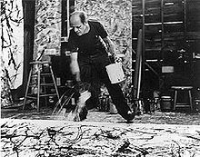

Pollock, Jackson (1912-56). American painter, the commanding figure of the Abstract Expressionist movement.
He began to study painting in 1929 at the Art Students' League, New York, under the Regionalist painter Thomas Hart Benton. During the 1930s he worked in the manner of the Regionalists, being influenced also by the Mexican muralist painters (Orozco, Rivera, Siqueiros) and by certain aspects of Surrealism. From 1938 to 1942 he worked for the Federal Art Project. By the mid 1940s he was painting in a completely abstract manner, and the `drip and splash' style for which he is best known emerged with some abruptness in 1947. Instead of using the traditional easel he affixed his canvas to the floor or the wall and poured and dripped his paint from a can; instead of using brushes he manipulated it with `sticks, trowels or knives' (to use his own words), sometimes obtaining a heavy impasto by an admixture of `sand, broken glass or other foreign matter'. This manner of Action painting had in common with Surrealist theories of automatism that it was supposed by artists and critics alike to result in a direct expression or revelation of the unconscious moods of the artist.
Pollock's name is also associated with the introduction of the All-over style of painting which avoids any points of emphasis or identifiable parts within the whole canvas and therefore abandons the traditional idea of composition in terms of relations among parts. The design of his painting had no relation to the shape or size of the canvas -- indeed in the finished work the canvas was sometimes docked or trimmed to suit the image. All these characteristics were important for the new American painting which matured in the late 1940s and early 1950s.